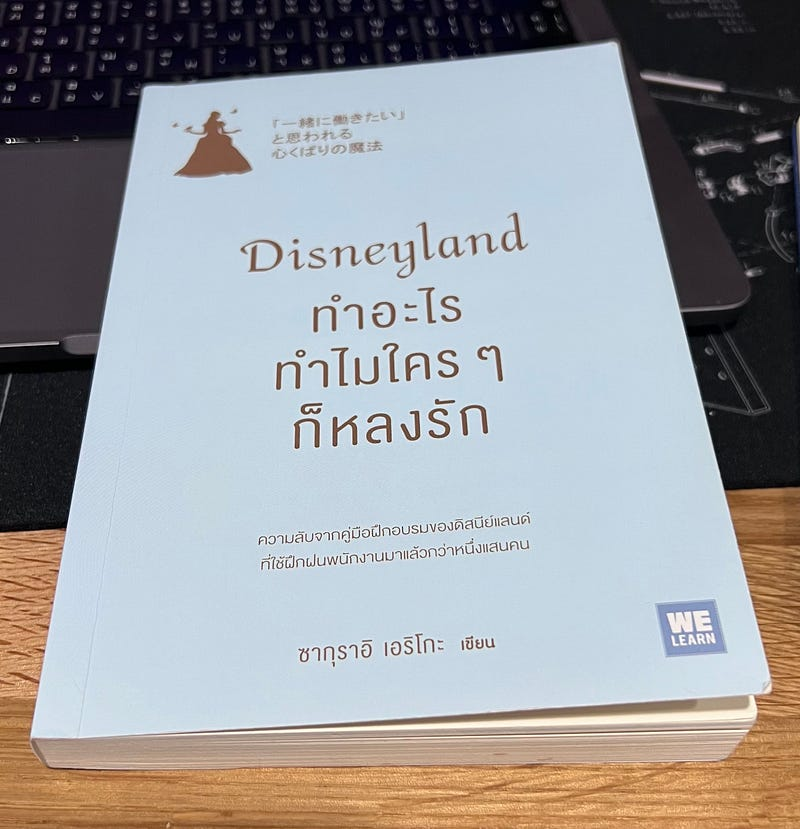

รีวิวหนังสือ ‘Disneyland ทำอะไรทำไมใครๆ ก็หลงรัก’

สวัสดีค่ะ ต้องขอเล่าก่อนว่า ตอนที่กิมหยิบหนังสือเล่มนี้ขึ้นมาจากชั้นที่ร้านหนังสือมาเก็บเข้ากองดอง คือ คิดว่าจะเป็นแนว Marketing แต่พอหยิบมาอ่าน เอ๊ะ เป็นแนวพัฒนาตัวเองนี่นา ซึ่งผู้เขียนได้นำประสบการณ์การทำงาน รวมถึงแนวคิดต่างๆ ในการทำงานที่มีการสอนหรือส่งต่อให้กับพนักงานในดิสนีย์แลนด์ค่ะ และพอได้อ่านไปไม่กี่หน้าก็เกิดความวางไม่ลงค่ะ
กิมเลยอยากขอแนะนำคนที่กำลังเจอชีวิตบันเทิงหรือเพลียอยู่กับข้อจำกัดในการใช้ชีวิตไม่ว่าจะเรื่องอะไร แล้วอยากได้หนังสือที่อ่านแล้วได้มุมมองดีๆ ให้กับตัวเองเพิ่มเติม ก็เล่มนี้เลยค่ะ ได้!
โดยเนื้อหาในหนังสือ จะยิบย่อยแบ่งออกเป็น 50 Magic สั้นๆ Magic ละสองถึงสามหน้าค่ะ อ่านง่ายมากๆ ผู้เขียนเล่าเก่งแทบไม่ต้องรวบรวมสมาธิในการอ่านเลยค่ะ
กิมขอหยิบยก Magic ที่กิมชอบมาแชร์สักสาม Magic นะคะ (ด้วยกลัวว่ารีวิวจะยาวไป ไม่ใช่แนวกิม)
Magic 02 เวลาทุกข์ใจให้ลองคิดว่า ตัวเองเป็นเจ้าหญิงดิสนีย์ดู
ผู้เขียนได้เล่าถึง ค่านิยมในปัจจุบันที่มีคนที่มีความต้องการพึ่งพาคนอื่นอย่างแรงกล้ามีปริมาณเพิ่มมากขึ้น ในทางจิตวิทยาจะเรียกคนแบบนี้ว่า คนที่มี “ปมซินเดอเรลล่า (Cinderella Complex)” เช่น คนที่อยากได้รับการปกป้องอยู่เสมอ, ต้องการอยู่กับคนที่ทำให้รู้สึกสบายใจ เป็นต้น แต่ถ้าใครเคยรู้จักซินเดอเรลล่าแล้ว จะรู้กันว่ากว่าที่ซินฯ จะได้เจอเจ้าชายเนี่ย มีวิบากกรรมขนาดไหน และถ้าเราสังเกตุเจ้าหญิงดิสนีย์คนอื่นๆ ดู ก็จะยิ่งเห็นได้ชัดว่า เจ้าหญิงแต่ละคนไม่ใช่คนแบบที่จะต้องการพึ่งพาคนอื่นเลย แล้วผู้เขียนก็ยกจุดเด่นของเจ้าหญิงอีกสองสามคนมาเขียนชัดๆ ให้ภาพลอยมาในหัวเราค่ะ ซึ่งแต่ละอัน คือ อ่านแล้วฮึบ เราก็ไม่ได้แพ้เจ้าหญิงนะ! ฟีลประมาณนี้ค่ะ ฮ่าา ทำให้เรามีการตอกหมุดย้ำลงไปในสิ่งที่เราเชื่ออยู่แล้วค่ะ
Magic 06 ทำให้คนที่อยู่ใกล้ตัวมีความสุข
ผู้เขียนเล่าเคสตัวอย่างที่เกิดขึ้นจริงในดิสนีย์ซึ่งแสดงถึงความที่มีใจรักในงานบริการ โดยไม่ได้มีสอนในตำรา เช่น พนักงานได้นำตุ๊กตาที่วางขายในร้าน มาให้ลูกค้าใช้ปกป้องศีรษะเมื่อเกิดแผ่นดินไหว หรือการที่ลูกค้านำตุ๊กตาเก่าๆ มาให้รักษา พนักงานก็นำไปซักซ่อมแซม แทนที่จะนำตัวใหม่ไปให้ลูกค้าเลย ด้วยเหตุผลที่ว่าต้องการให้ตุ๊กตายังคงเป็นตุ๊กตาตัวเดิมที่ลูกค้ารักผูกพัน เป็นต้น ซึ่งผู้เขียนคิดว่าหลักสำคัญของการให้บริการ คือ “การทำสิ่งที่เหนือความคาดหวังของอีกฝ่าย”
กิมมักจะชอบเตือนตัวเองอยู่เสมอว่า “ยิ่งสนิทย่ิงต้องเกรงใจ” และพอมาอ่าน Magic นี้ ก็ทำให้ขยายความคิดได้ว่า มันจะดีนะ ถ้าเราได้ทำให้คนที่อยู่ใกล้ตัวเรามีความสุขเพิ่มขึ้นได้อีก ได้อีก ได้อีก(ภาพทุ่งลาเวนเดอร์มา) ค่ะ
Magic 42 ตั้งคำถามกับงานที่อยู่ตรงหน้าว่า “ทำไม” 3 ครั้ง
เราอาจเคยอ่านความพิเศษเกี่ยวกับการตั้งคำถาม “ทำไม” มากันมากแล้วในหลายปีที่ผ่านมา แต่ใน Magic นี้ กิมขอให้คะแนนผู้เขียน ว่าสามารถเล่าได้ง่าย และน่าลองปรับใช้ค่ะ ผู้เขียนได้เล่าว่า ที่ดิสนีย์ได้ให้ความสำคัญกับหลักฐานหรือมูลความจริง (Evidence) มากค่ะ มีการรวบรวมข้อมูลสถานการณ์ต่างๆ มาใช้วิเคราะห์ปรับปรุง เพื่อส่งมอบความสุขให้กับเกสต์ (เกสต์ คือ คำที่ดิสนีย์ใช้เรียกลูกค้า) ซึ่งการค้นหาปัญหาของตัวเองและนำมาแก้ไขอยู่เสมอเป็นทักษะที่สำคัญอย่างมากในการทำงาน และการฝึกฝนทักษะนี้ จะต้องมีนิสัยฝึกพิจารณาสิ่งต่างๆให้ลึกซึ้ง โดยผู้เขียนได้อ้างอิงจากบริษัทโตโยต้า ว่ามีวิธีวิเคราะห์ปัญหาที่เรียกว่า “Why Why Analysis” โดยการตั้งคำถาม “ทำไม” ต่อสถานการณ์ที่เกิดขึ้น ไปเรื่อยๆ ให้ได้ 3ครั้ง (สามารถปรับเป็น 5 ครั้งได้ ถ้าเราต้องการความลึกในปัญหา) อาจเริ่มต้นตั้งคำถามกับงานที่เราทำอยู่ทุกวันค่ะ เพื่อได้เข้าใจถึงงานที่เราทำอย่างลึกซึ้ง และเกิดประสิทธิภาพของการทำงานเพิ่มขึ้นค่ะ
ขอบคุณที่อ่านรีวิวของกิมจนจบค่ะ ขอให้ทุกคนสนุกกับการอ่านค่ะ